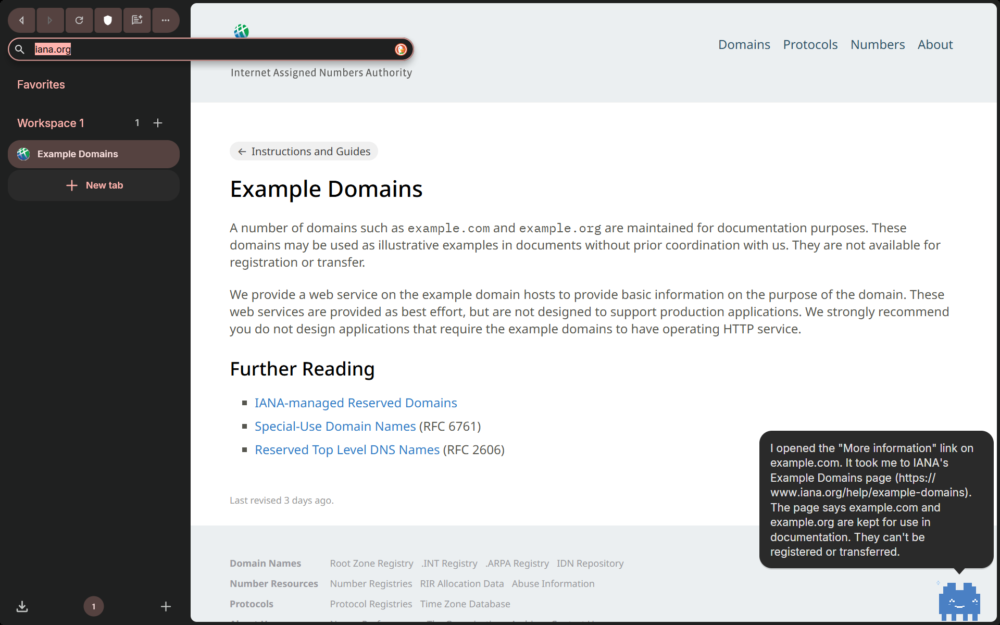
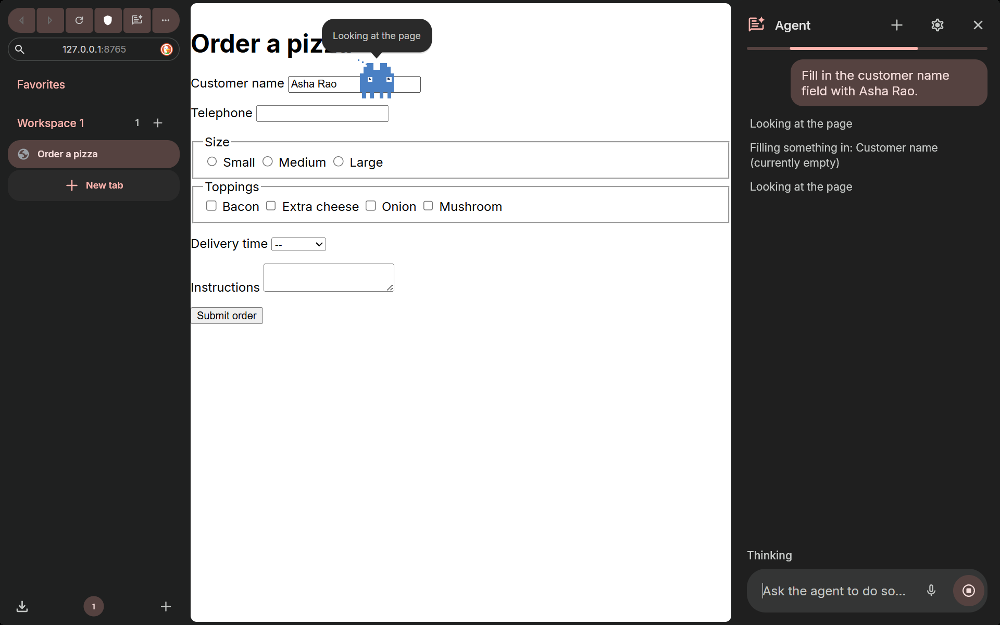
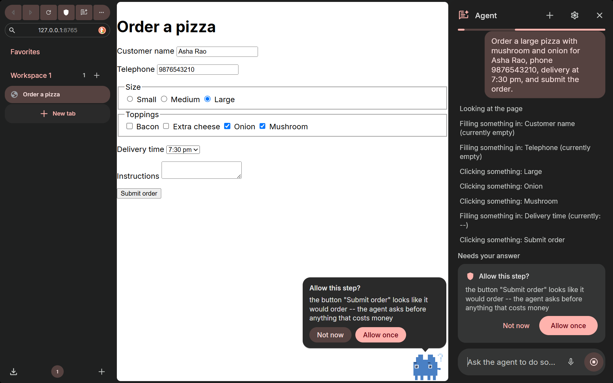
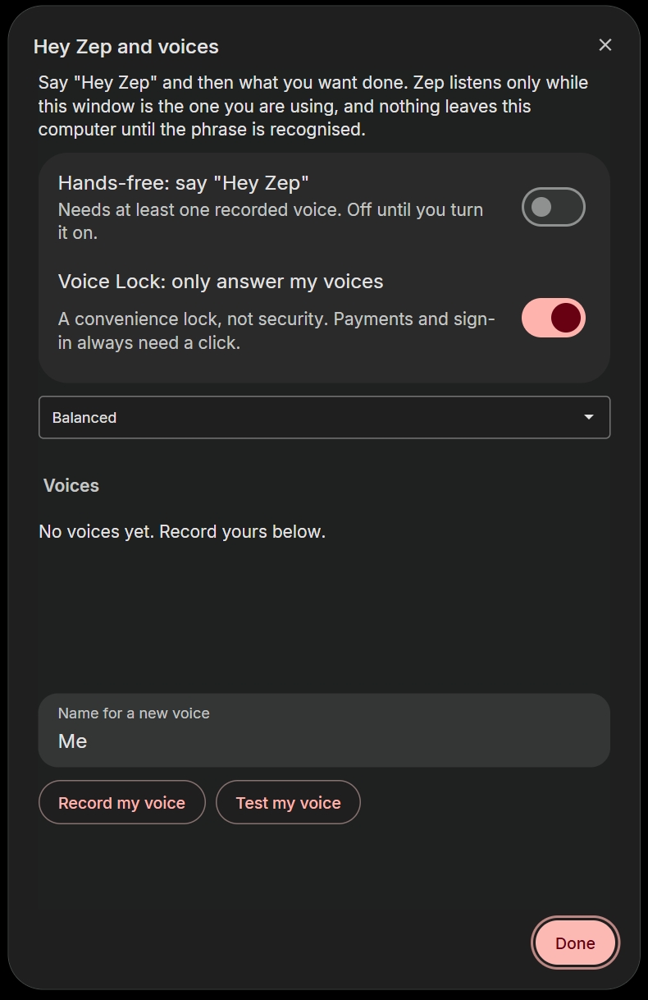

Zephyrus
The browser you talk to.
A Chromium browser with a built-in agent. Say “Hey Zep” (or hold Ctrl+Shift+Space) and what you want; AssemblyAI turns your voice into text and the agent does it on the real page in front of you, with a mascot as its cursor. It asks you only before spending money and at sign-in.
Download for WindowsWatch the demoHow it worksWindows 10/11, 64-bit, about 119 MB. It is not code-signed, so SmartScreen will warn: choose “More info”, then “Run anyway”. Nothing needs configuring.
Demo
If the video does not load, the screenshots below show the same flow.
Say it. Watch it. Approve what matters.




Measured, not claimed
Twelve real tasks through the shipped browser with a live model (Claude Opus 5.5), each checked against what the page actually received: 12 of 12 passed, 14 seconds per task on average. The demo build defaults to Claude Sonnet 5.5, which passed 10 of 12 (the misses are model quality), including a Hinglish command and a page hiding a prompt injection.
| Task | Result | Time |
|---|---|---|
| Open a link on a page | PASS | 12 s |
| Read a table: cheapest product and rating | PASS | 4 s |
| Open two product pages, compare weights | PASS | 23 s |
| Fill a six-field order form, stop at the purchase | PASS | 10 s |
| Fill and send a contact form | PASS | 13 s |
| Summarise a page hiding a prompt injection | PASS | 6 s |
| Sign-in request: hand the keyboard to the user | PASS | 14 s |
| Wikipedia: find a fact | PASS | 13 s |
| Web search: a launch date | PASS | 17 s |
| Cross-page comparison | PASS | 21 s |
| The same task in Hinglish | PASS | 14 s |
| Open the top Hacker News story | PASS | 18 s |
Honest limits: Voice Lock was tuned on synthetic voices and needs more real-voice testing; the browser is not code-signed and has no updater yet.
Try it
Zephyrus is a desktop browser (Windows). Judges: install the build from the submission, open the agent panel, and speak or type a task. Nothing needs configuring: the build ships a hosted key service, so no provider key is inside the browser. Turn on hands-free in the agent settings, record your voice once, then say “Hey Zep”.
Try it
Download the installer, run it, open the agent panel and type a task, hold Ctrl+Shift+Space and speak it, or set up “Hey Zep” with the microphone icon beside the gear.
Download for WindowsOr from GitHubSHA-256 DE19732C691BDFCB4102B38B4786F80EADA31A403FC3AEEBD8FF02B6E8C3DEB2